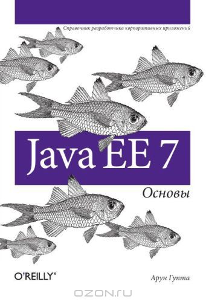

Content
Изучаем Java EE 7
Работа с ними продемонстрирована на практических примерах.
В этом фундаментальном издании также используется новейшая версия инструмента GlassFish, предназначенного для развертывания и администрирования примеров кода.\n
Книга написана ведущим специалистом по обработке запросов на спецификацию Java EE, членом наблюдательного совета организации Java Community Process (JCP).
В ней вы найдете максимально ценную информацию, изложенную с точки зрения эксперта по технологиям Java для предприятий.
842
Java EE 7. Основы

Изучите передовые технологии платформы Java Enterprise Edition 7 и узнайте о новинках, реализованных в ее последней версии,
которая обеспечивает поддержку HTML5 и предлагает повышенную производительность и расширенную функциональность
корпоративных приложений. Книга написана одним из ведущих разработчиков проекта Java EE,
и каждая глава в ней посвящена рассмотрению одной из ключевых спецификаций платформы, включая WebSockets,
Batch Processing, RESTful Web Services и Java Message Service.
439
Java EE 7. Основы
В своей книге Кей С. Хорстманн, маститый автор и знаток Java, предлагает вниманию читателей наиболее
ценные из новых языковых средств в версии Java 8, а также рассматривает те средства, которые были внедрены
в версии Java 7, но не удостоились должного внимания программистов. Те, у кого имеется опыт программирования
на Java, найдут в этой книге практические рекомендации и примеры кода, демонстрирующие нововведения в версии Java 8,
чтобы как можно быстрее воспользоваться этими и другими усовершенствованиями языка и платформы Java.
360